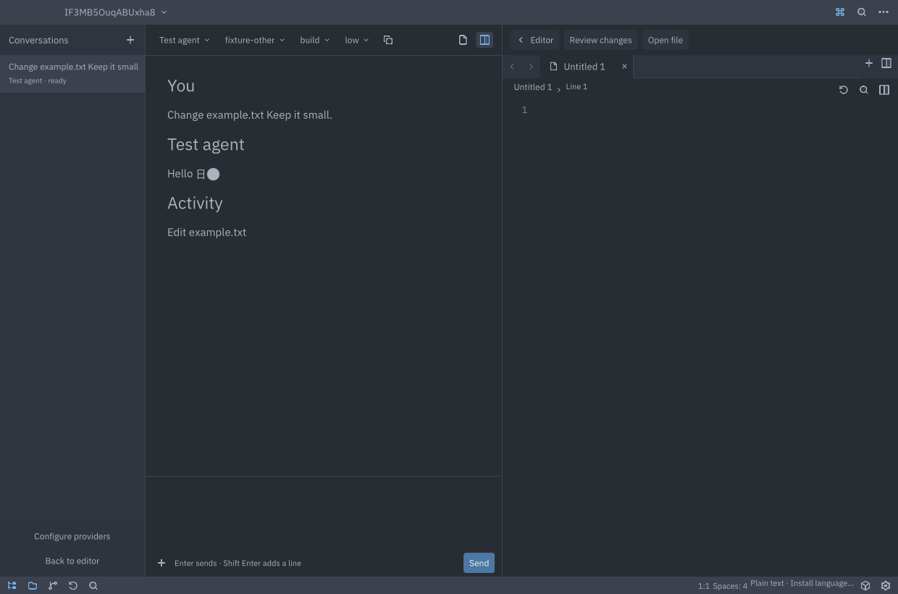
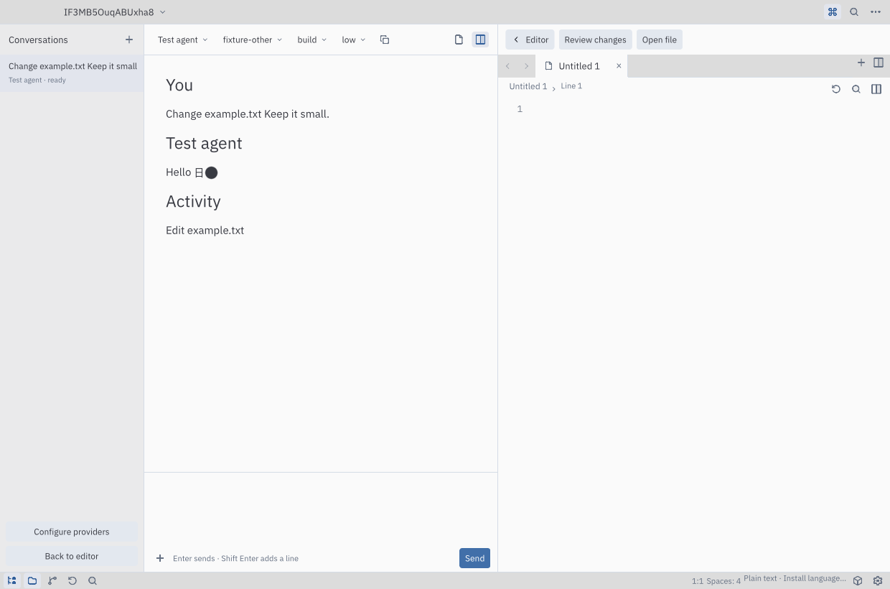
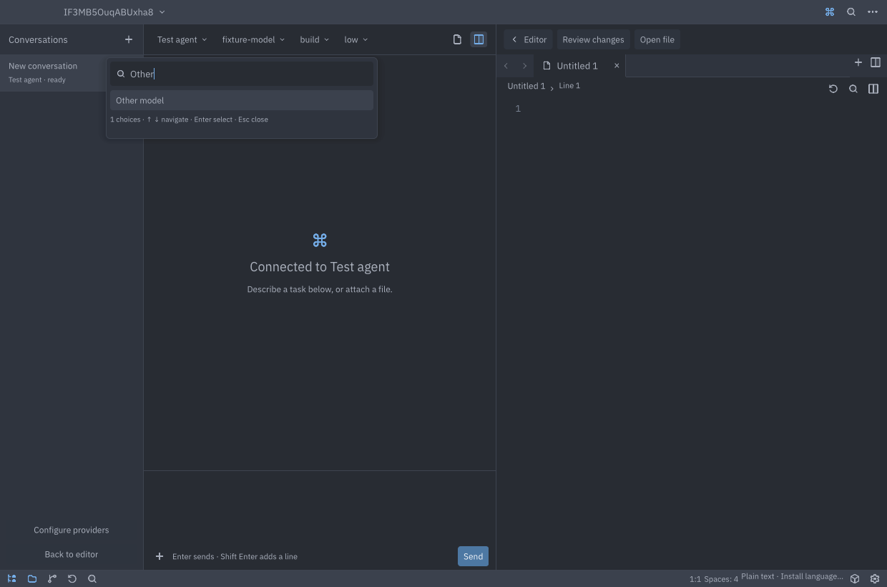
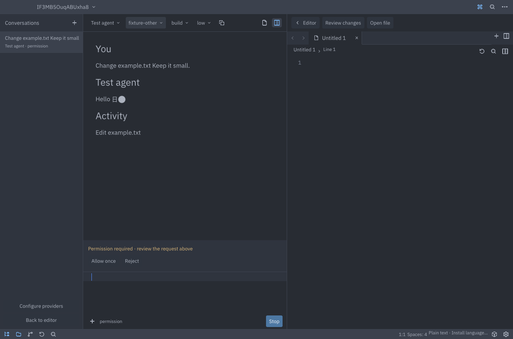
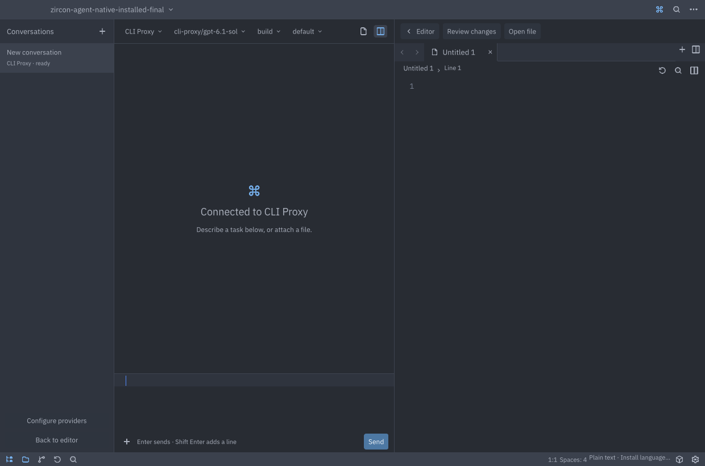
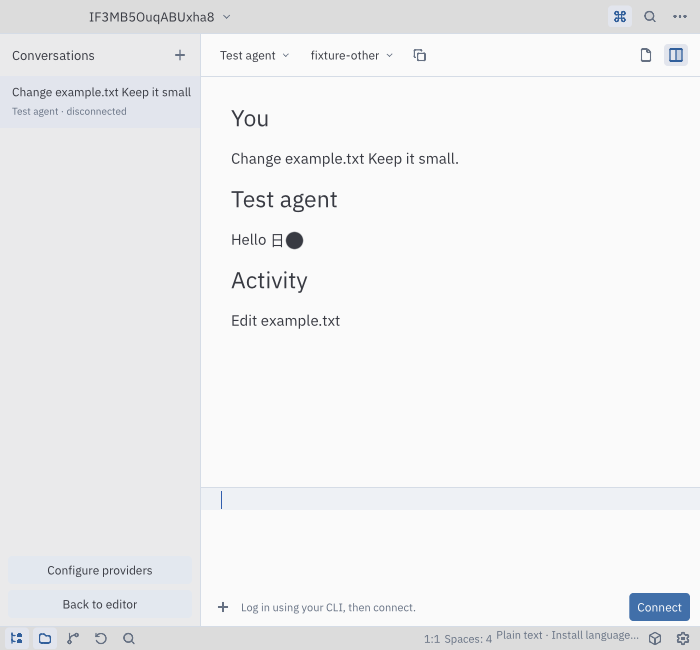

Native conversation with the deterministic test agent. Unicode streaming and approval-gated file editing are asserted.
The same native workflow with shared light theme colors.
Filtered native model picker. Keyboard selection returns focus to the composer.
The test agent requests an edit. No file is written before Allow once.
Real installed OpenCode ACP connection to your CLI proxy. Fifteen proxy model IDs loaded; no model prompt sent.
A real 700 × 650 native window. The editor pane is omitted at this size.